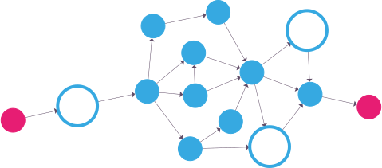

The 1e14.org project aims to bring function graph programming (FGP) into the mainstream, by developing and maintaining the building blocks necessary for FGP programs as open-source libraries and frameworks.
(In "function graph programming", code is organized into a nested structure of interconnected nodes, rather than text files.)

1e14.org is running two open-source projects at the moment. We're looking to expand this over time, as FGP and 1e14 lend themselves very well to a wide range of applications.
The first, also named "1e14", is a library (plus extensions) that provides the foundations for building FGP programs.
It's fairly stable, and well documented.
The other one, "ninety", is a modern web application framework. Ninety largely adheres to the MVVM architectural pattern, but you build the app as an FGP graph, where changes flow through the program.
As a framework, Ninety focuses on clarity and performance.
Ninety is a work in progress and so it's not considered ready for use, but there is a very early demo that you can check out here.